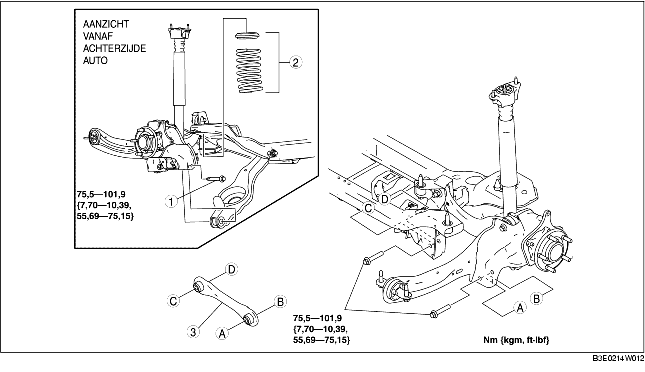

1. Verwijder de rijniveausensor achter. (Zie VERWIJDEREN/PLAATSEN RIJNIVEAUSENSOR.)
2. Verwijder de stabilisatorstang achter. (Zie VERWIJDEREN/PLAATSEN STABILISATORSTANG ACHTER.)
3. Verwijder de onderdelen in de aangegeven volgorde, zie de tabel.
4. Plaats de onderdelen in omgekeerde volgorde.
5. Controleer de wieluitlijning en corrigeer deze indien nodig.
(Zie ACHTERWIELUITLIJNING.)

.
1. Ondersteun de onderste draagarm achter met een krik.
2. Draai de binnenste bout van de onderste draagarm achter los.
3. Verwijder de buitenste bout van de onderste draagarm achter.
1. Plaats de achterste dwarsarm met de rib naar de voorzijde van de auto gericht.